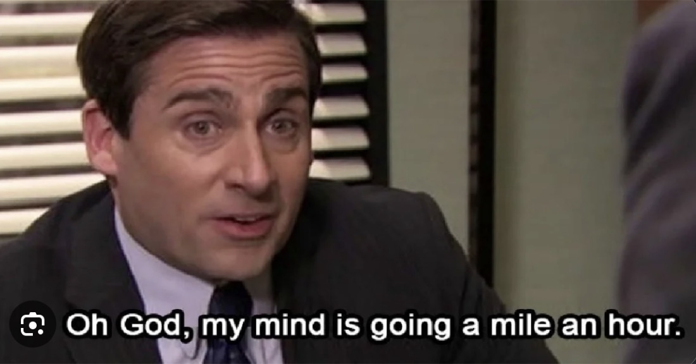
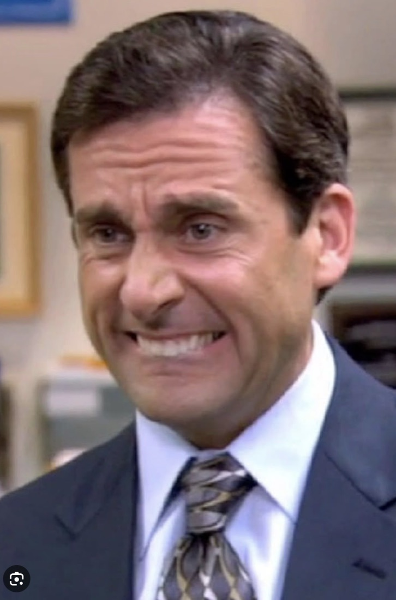
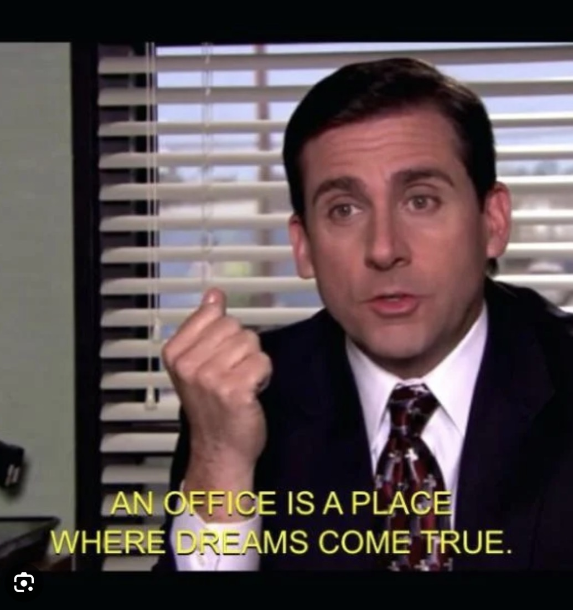
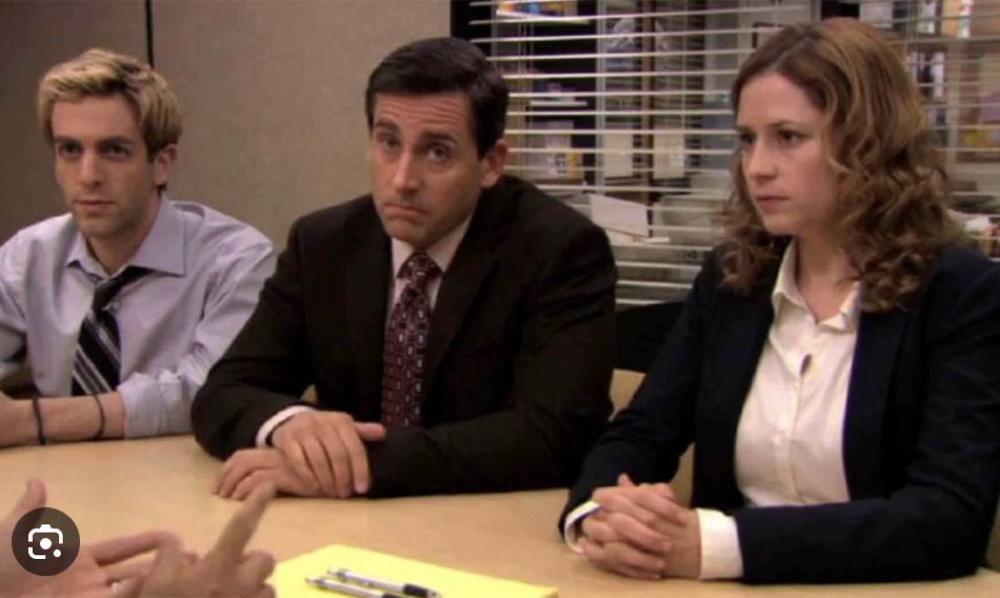
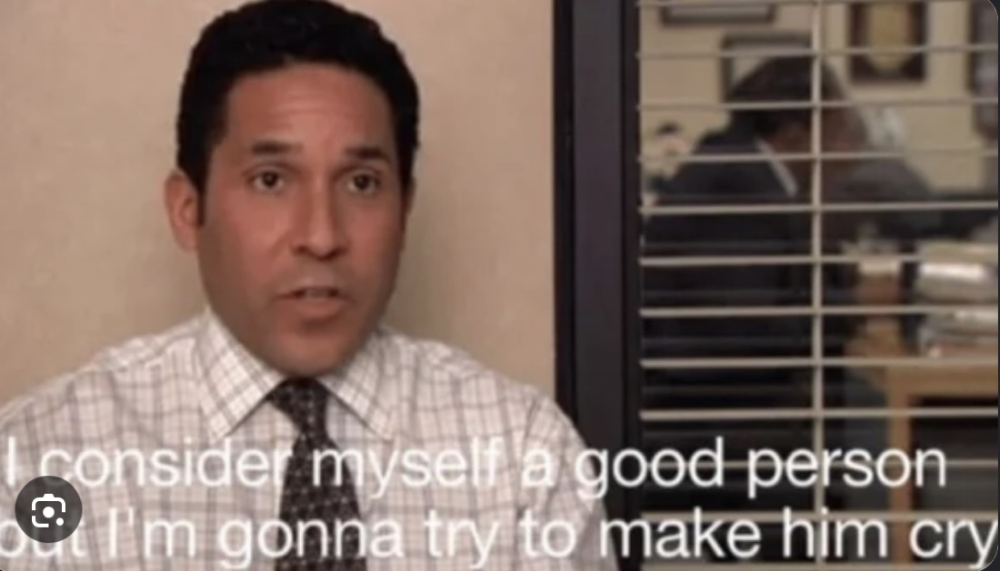
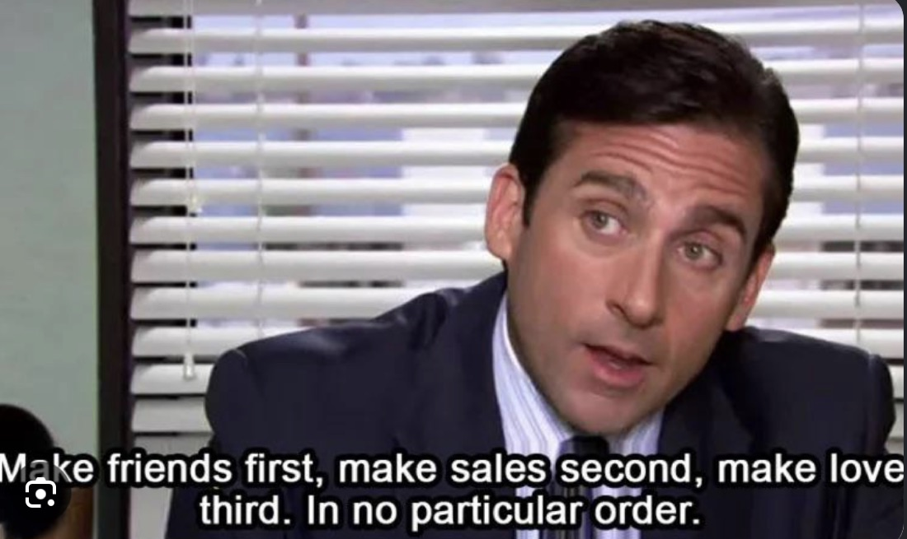

Przygotowałeś się najlepiej, jak potrafiłeś.
Kurs, notatki, laby, praktyka i poświęcone wieczory. Tego nikt Ci już nie zabierze. Dzisiaj tylko zbierasz plon.
Spokojna odprawa przed egzaminem
Nie uczysz się tego od wczoraj. Każdy diagram, każda architektura, każdy wieczór z dokumentacją jest już w Twojej głowie. Dzisiaj nie musisz niczego udowadniać. Wystarczy, że usiądziesz, weźmiesz oddech i spokojnie przeczytasz pierwsze pytanie.
Trzy rzeczy, o których warto pamiętać
Kurs, notatki, laby, praktyka i poświęcone wieczory. Tego nikt Ci już nie zabierze. Dzisiaj tylko zbierasz plon.
To egzamin, w którym nawet doświadczeni architekci nie są pewni każdej odpowiedzi. Próg zaliczenia to 750 na 1000 punktów, a nie perfekcja.
Cokolwiek się wydarzy, zawsze możesz spróbować jeszcze raz. Dzięki temu możesz zdawać z luzem, a z luzem myśli się najlepiej.

Rano: „Mój umysł pracuje milion mil na godzinę.”
Za chwilę: pierwsze pytanie, kilka głębokich oddechów i ta sama głowa pracuje już w Twoim tempie.
Strategia na 180 minut
„Najbardziej opłacalne”, „najmniejszy narzut operacyjny”, „najwyższa dostępność”, „minimalne zmiany w aplikacji”. Jedno takie słowo zwykle rozstrzyga, która odpowiedź jest właściwa.
Zwykle dwie odpowiedzi odpadają od razu: łamią wymaganie albo komplikują rozwiązanie bez powodu. Zostają dwie. Wybierz tę, która lepiej pasuje do słów kluczowych.
Masz średnio około 2,4 minuty na pytanie (75 pytań, 180 minut). Dłuższy tekst nie oznacza trudniejszego pytania. Zaznacz do przeglądu, wróć na końcu ze świeżą głową. Często odpowiedź przychodzi sama.
Checklista przed startem
Zaznaczaj po kolei. Gdy zaświecą się wszystkie, możesz zaczynać.
Zaznacz, co już masz gotowe.
Gdy pojawi się stres albo pytanie bez odpowiedzi


Wdech na 4, wydech na 6. Dwa razy. Zajmuje 20 sekund, a uspokaja układ nerwowy naprawdę skutecznie.
Odrzuć odpowiedzi, które na pewno nie pasują. Nawet bez pewności masz wtedy dużą szansę na dobry wybór.
Część pytań w egzaminie to pytania próbne i nie wlicza się do wyniku. Nie wiesz, które. Nie warto się więc nad żadnym zadręczać.
Nie sprawdzaj, kto wyszedł pierwszy. Masz własne tempo i własne 180 minut. Wykorzystaj je po swojemu.
Karta projektu
Kibice


Plan dnia
Spokojne śniadanie i kawa. Żadnego wkuwania na ostatnią chwilę. Wiesz już, co wiesz.
Woda, toaleta, trzy głębokie oddechy. Odłóż telefon. Uśmiech do siebie.
Czytaj powoli, eliminuj, zaznaczaj trudne. Po godzinie i po dwóch rusz ramionami i napij się wody.
Wyłącz głowę. Obiad, spacer i coś dobrego. Zasłużyłeś, niezależnie od wyniku.
Na koniec
Za każdy wieczór nauki, za upór i za to, że w ogóle podjąłeś się czegoś tak trudnego. Dzisiaj nie musisz być idealny. Wystarczy, że będziesz sobą: tym samym, który zbudował całą tę wiedzę. Wejdź spokojnie. Dasz radę.
